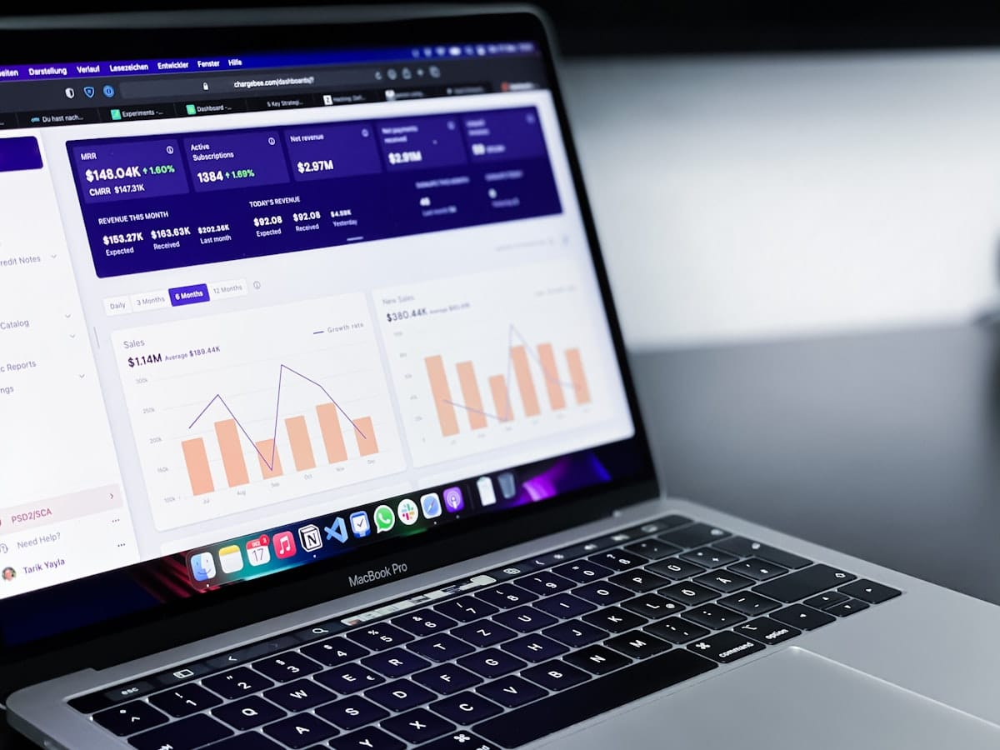

How to Use AI Tools to Monitor Your Portfolio
Use ChatGPT, Claude, and Portfolio Visualizer to watch your investments without staring at Robinhood. A calm, AI-assisted portfolio routine that works.
Z Zar · 27 May 2026 — 5 min read

Want to go deeper on this? See How to Invest During High Inflation.
For the full breakdown, read How to Stop Living Paycheck to Paycheck in 2026 (A Realistic Plan).
Want to go deeper on this? See dollar cost averaging.
Want to go deeper on this? See dollar cost averaging and why it works.
Disclosure: ZarWealth uses Amazon and other affiliate links throughout this article. We receive a small commission on qualifying purchases, at no additional cost to you. This helps keep ZarWealth free of paywalls and intrusive ads. Always do your own research before investing.
📈 Investing
Part of our Complete Investing Guide — the AI tools that watch your portfolio so you don't have to.
Why most investors overcheck their portfolios
Vanguard published a study in 2023 showing that investors who checked their portfolios daily underperformed those who checked monthly by 1.5-2.0% annually. The cause isn't strategy — it's behavior. More checking means more emotional decisions, more rebalancing at the wrong time, and more panic selling during drawdowns.
The solution isn't "stop checking" — that's unrealistic for anyone with skin in the game. The solution is to delegate the monitoring to AI tools that watch the data 24/7, alert you only when something actually matters, and remove your need to obsess over daily fluctuations.
Done right, AI portfolio monitoring replaces compulsive checking with weekly or monthly summary digests — keeping you informed without triggering the worst behavioral biases.
What AI portfolio monitoring actually does
Modern AI tools for portfolio monitoring fall into four categories. Aggregators like Empower (formerly Personal Capital) or Monarch Money pull data from all your accounts and give you a single net-worth dashboard. Alert systems like Atom Finance or Composer notify you when allocations drift beyond a target, a holding moves >5%, or news breaks on a stock you own. Tax optimizers like Wealthfront or Betterment automatically harvest losses and rebalance for tax efficiency. AI analysts like FinChat or Public Premium use LLMs to summarize earnings calls, explain SEC filings, and answer questions in plain English.
For most retail investors, the AI category that delivers the highest ROI is aggregators + alerts. Tax optimizers are great if you have a taxable account >$25k. AI analysts are useful if you actively pick stocks (which most shouldn't).
📘 Free Download
Get the 6-page FI Checklist PDF
A roadmap to financial independence — sent to your inbox the moment you subscribe. Plus weekly investing playbooks.
Send me the PDF →No spam. Unsubscribe anytime.
The best AI portfolio monitoring tools in 2026
Empower (free) remains the king of aggregator dashboards. Connects to virtually every bank, brokerage and 401(k) provider in the US. The "Retirement Planner" feature uses Monte Carlo simulation to project whether you're on track. Monetization: they call you to sell wealth management — easy to decline.
Monarch Money ($14.99/mo) is what Mint should have been. Paid because Mint shut down in 2024. Cleaner UI than Empower, better budgeting, equally robust portfolio tracking. Worth the $180/year if you want all-in-one without ads or sales calls.
Atom Finance (free + Pro $9.99/mo) is built for active investors. Real-time portfolio analytics, SEC filing summaries, earnings call transcripts with AI summaries. The free tier is enough for most; Pro adds advanced screening.
Composer (free + Pro $20/mo) is no-code algorithmic investing. You define rules ("if VIX > 25, rotate to bonds") and the AI executes. More tool-for-tinkerers than for hands-off investors.
How to set up AI portfolio monitoring without getting overwhelmed
The mistake most people make: they connect every tool, get 30 daily alerts, and end up checking more than before. The right setup is one aggregator + one alert system, both configured to email weekly summaries — not push notifications.
Step 1: Pick Empower (free) or Monarch ($15/mo). Connect every account. Wait 1 week for data to populate fully.
Step 2: Configure weekly email digest. No push notifications. No phone widget. If you can't check the dashboard without a trigger, you won't compulsively open the app.
Step 3: Add ONE alert rule for major events: "notify me if total portfolio drops >10% in a week" or "notify me if allocation drifts >5% from target." That's it.
Step 4: Schedule a 30-minute monthly review on your calendar. Open the dashboard, read the digest, make any rebalancing decisions, close it. Don't reopen for 30 days.
AI monitoring mistakes to avoid
Don't connect taxable + retirement + crypto + checking all in one dashboard at first. Start with retirement + brokerage only. Adding crypto early creates noise from 24/7 price swings that don't matter to your long-term strategy.
Don't enable push notifications. They're designed to drive engagement, not good behavior. Email-only or in-app-only is the right choice for any account you've owned for less than 5 years.
Don't act on every AI suggestion. Tools like Atom and Composer surface "trading ideas" because that's what keeps you engaged with the app. Most should be ignored. Your AI tool should make you ACT LESS, not more.
For the deeper philosophy on this, see our AI for passive investing guide.
Frequently Asked Questions
What is the best free AI portfolio tracker in 2026?
Empower (formerly Personal Capital). Free, connects to virtually all US accounts, includes retirement planning and net worth tracking. Trade-off: they call you to sell wealth management services. Easy to politely decline.
Is Monarch Money worth the $15/month subscription?
Yes if you want a clean budgeting + portfolio tool with zero ads or sales calls. No if you only need portfolio tracking (Empower covers that for free). Monarch makes the most sense for couples who want to share a single financial dashboard.
Can AI tools actually pick better stocks than humans?
The honest answer: not consistently. Tools like Composer or Atom can backtest strategies and screen efficiently, but in 2026 no AI tool reliably beats a low-cost S&P 500 index fund net of fees. The real value of AI in investing is behavioral (preventing your mistakes), not predictive.
Should I let AI rebalance my portfolio automatically?
For retirement accounts (IRA, 401k), yes — auto-rebalancing once a year prevents drift without your involvement. For taxable accounts, be careful — automatic rebalancing can trigger capital gains taxes. Use tax-aware rebalancers like Wealthfront or Betterment for taxable accounts.
How often should I actually check my portfolio?
Monthly is enough for 99% of long-term investors. Vanguard research shows daily checking correlates with 1.5-2% lower returns due to behavioral selling. Set a calendar reminder for the 1st of each month and ignore the dashboard the other 29 days.
What data do AI portfolio tools collect about me?
All of them collect: account balances, transactions, holdings, demographic info. Most reputable ones (Empower, Monarch) are read-only — they cannot move money. They do use your data for product improvement and aggregated analytics. None should sell individual data; check the privacy policy before connecting any account.
Are AI portfolio tools safe to connect to my brokerage?
Yes, when they use Plaid (the standard for US fintech). Plaid encrypts credentials and gives the tool read-only access. The risk is data breach at the AI tool itself — pick established providers (Empower, Monarch, Atom) over no-name apps. Never give a portfolio app your trade-execution password.
Monitoring is half the job; planning is the other half. Here is which AI retirement planner fits you, with a 60-second matcher.
📊 Want the full picture?
For the broader investing roadmap from $0 to $1M, see our Complete Investing Guide — covers asset allocation, account types, and tax strategy for every life stage.
📋 The FI Checklist
Track your path to financial independence with our free FI Checklist — a one-page printable covering every step from emergency fund to 25x annual expenses.
Disclosure: ZarWealth uses Amazon and other affiliate links throughout this article. We receive a small commission on qualifying purchases, at no additional cost to you. This helps keep ZarWealth free of paywalls and intrusive ads. Always do your own research before investing.